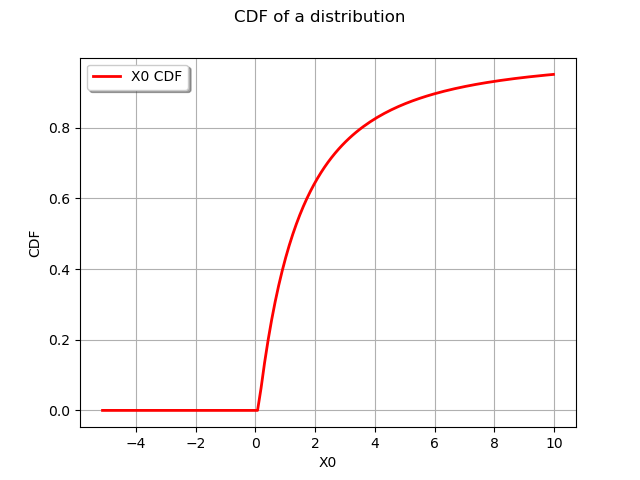
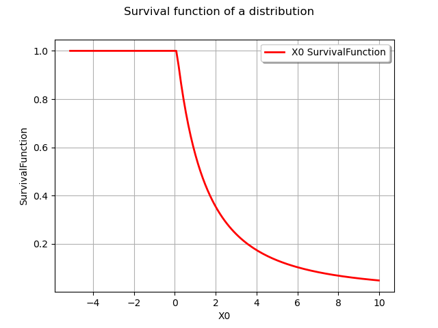
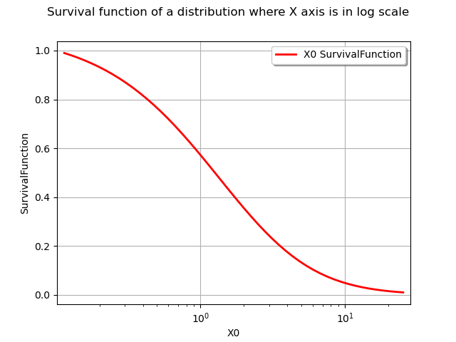
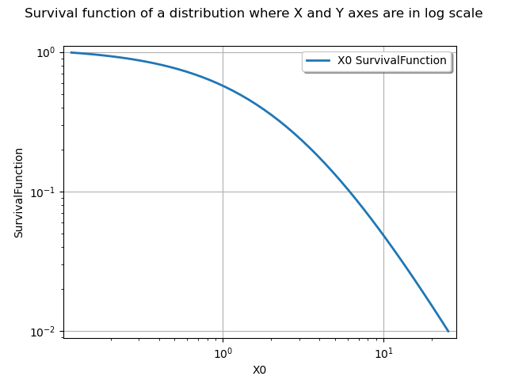
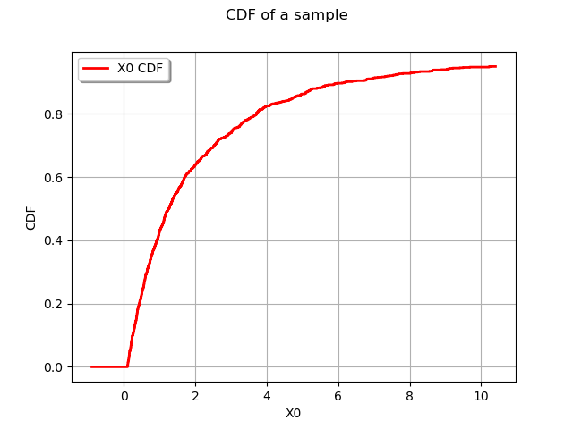
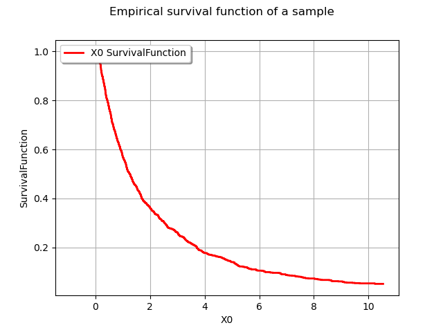
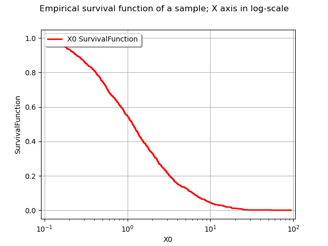
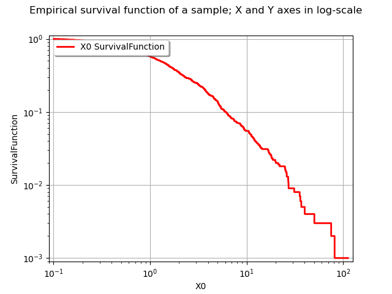
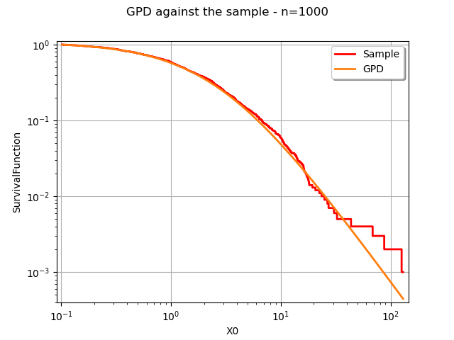

Note
Go to the end to download the full example code
Draw a survival function¶
# sphinx_gallery_thumbnail_number = 9
Introduction¶
The goal of this example is to show how to draw the survival function of a sample or a distribution, in linear and logarithmic scales.
Let  be a random variable with distribution function
be a random variable with distribution function  :
:

for any  .
The survival function
.
The survival function  is:
is:
![S(x) = P(X>x) = 1 - P(X\leq x) = 1 - F(x)]()
for any .
Let us assume that  is a sample from .
is a sample from .
Let  be the empirical cumulative distribution function:
be the empirical cumulative distribution function:
![\hat{F}_N(x) = \frac{1}{N} \sum_{i=1}^N \mathbf{1}_{x_i\leq x}]()
for any .
Let  be the empirical survival function:
be the empirical survival function:
![\hat{S}_N(x) = \frac{1}{N} \sum_{i=1}^N \mathbf{1}_{x_i>x}]()
for any .
Motivations for the survival function¶
For many probabilistic models associated with extreme events or lifetime models, the survival function has a simpler expression than the distribution function.
More specifically, several models (e.g. Pareto or Weibull) have a simple expression when we consider the logarithm of the survival function. In this situation, the
![(\log(x),\log(S(x)))]() plot is often used.
For some distributions, this plot is a straight line.
plot is often used.
For some distributions, this plot is a straight line.When we consider probabilities very close to 1 (e.g. with extreme events), a loss of precision can occur when we consider the
 expression
with floating point numbers.
This loss of significant digits is known as “catastrophic cancellation” in
the bibliography and happens when two close floating point numbers are subtracted.
This is one of the reasons why we sometimes use directly the survival
function instead of the complementary of the distribution.
expression
with floating point numbers.
This loss of significant digits is known as “catastrophic cancellation” in
the bibliography and happens when two close floating point numbers are subtracted.
This is one of the reasons why we sometimes use directly the survival
function instead of the complementary of the distribution.
Define a distribution¶
import openturns as ot
import openturns.viewer as viewer
from matplotlib import pylab as plt
ot.Log.Show(ot.Log.NONE)
sigma = 1.4
xi = 0.5
u = 0.1
distribution = ot.GeneralizedPareto(sigma, xi, u)
Draw the survival of a distribution¶
The computeCDF and computeSurvivalFunction computes the CDF and survival of a distribution.
p1 = distribution.computeCDF(10.0)
p1
0.9513919027838056
p2 = distribution.computeSurvivalFunction(10.0)
p2
0.048608097216194426
p1 + p2
1.0
The drawCDF and drawSurvivalFunction methods allows one to draw the functions and .
graph = distribution.drawCDF()
graph.setTitle("CDF of a distribution")
view = viewer.View(graph)

graph = distribution.drawSurvivalFunction()
graph.setTitle("Survival function of a distribution")
view = viewer.View(graph)

In order to get finite bounds for the next graphics, we compute the xmin and xmax bounds from the 0.01 and 0.99 quantiles of the distributions.
xmin = distribution.computeQuantile(0.01)[0]
xmin
0.11410588272579382
xmax = distribution.computeQuantile(0.99)[0]
xmax
25.29999999999998
The drawSurvivalFunction methods also has an option to plot the survival with the X axis in logarithmic scale.
npoints = 50
logScaleX = True
graph = distribution.drawSurvivalFunction(xmin, xmax, npoints, logScaleX)
graph.setTitle("Survival function of a distribution where X axis is in log scale")
view = viewer.View(graph)
# graph

In order to get both axes in logarithmic scale, we use the LOGXY option of the graph.
npoints = 50
logScaleX = True
graph = distribution.drawSurvivalFunction(xmin, xmax, npoints, logScaleX)
graph.setLogScale(ot.GraphImplementation.LOGXY)
graph.setTitle(
"Survival function of a distribution where X and Y axes are in log scale"
)
view = viewer.View(graph)
# graph

Compute the survival of a sample¶
We now generate a sample that we are going to analyze.
sample = distribution.getSample(1000)
sample.getMin(), sample.getMax()
(class=Point name=Unnamed dimension=1 values=[0.101087], class=Point name=Unnamed dimension=1 values=[198.743])
The computeEmpiricalCDF method of a Sample computes the empirical CDF.
p1 = sample.computeEmpiricalCDF([10])
p1
0.949
Activating the second optional argument allows one to compute the empirical survival function.
p2 = sample.computeEmpiricalCDF([10], True)
p2
0.051
p1 + p2
1.0
Draw the survival of a sample¶
In order to draw the empirical functions of a Sample, we use the UserDefined class.
The drawCDF method plots the CDF.
The drawSurvivalFunction method plots the survival function.
userdefined = ot.UserDefined(sample)
graph = userdefined.drawCDF()
graph.setTitle("CDF of a sample")
view = viewer.View(graph)
# graph

graph = userdefined.drawSurvivalFunction()
graph.setTitle("Empirical survival function of a sample")
view = viewer.View(graph)
# graph

As previously, the drawSurvivalFunction method of a distribution has an option to set the X axis in logarithmic scale.
xmin = sample.getMin()[0]
xmax = sample.getMax()[0]
pointNumber = sample.getSize()
logScaleX = True
graph = userdefined.drawSurvivalFunction(xmin, xmax, pointNumber, logScaleX)
graph.setTitle("Empirical survival function of a sample; X axis in log-scale")
view = viewer.View(graph)
# graph

We obviously have  , where
, where  is the sample maximum.
This prevents from using the sample maximum and have a logarithmic Y axis at the same time.
This is why in the following example we restrict the interval where we draw the survival function.
is the sample maximum.
This prevents from using the sample maximum and have a logarithmic Y axis at the same time.
This is why in the following example we restrict the interval where we draw the survival function.
xmin = sample.getMin()[0]
xmax = sample.getMax()[0] - 1 # To avoid log(0) because P(X>Xmax)=0
pointNumber = sample.getSize()
logScaleX = True
graph = userdefined.drawSurvivalFunction(xmin, xmax, pointNumber, logScaleX)
graph.setLogScale(ot.GraphImplementation.LOGXY)
graph.setTitle("Empirical survival function of a sample; X and Y axes in log-scale")
view = viewer.View(graph)
# graph

Compare the distribution and the sample with respect to the survival¶
In the final example, we compare the distribution and sample survival functions in the same graphics.
xmin = sample.getMin()[0]
xmax = sample.getMax()[0] - 1 # To avoid log(0) because P(X>Xmax)=0
npoints = 50
logScaleX = True
graph = userdefined.drawSurvivalFunction(xmin, xmax, pointNumber, logScaleX)
graph.setLogScale(ot.GraphImplementation.LOGXY)
graph.setColors(["blue"])
graph.setLegends(["Sample"])
graphDistribution = distribution.drawSurvivalFunction(xmin, xmax, npoints, logScaleX)
graphDistribution.setLegends(["GPD"])
graph.add(graphDistribution)
graph.setLegendPosition("topright")
graph.setTitle("GPD against the sample - n=%d" % (sample.getSize()))
view = viewer.View(graph)
# graph
plt.show()
